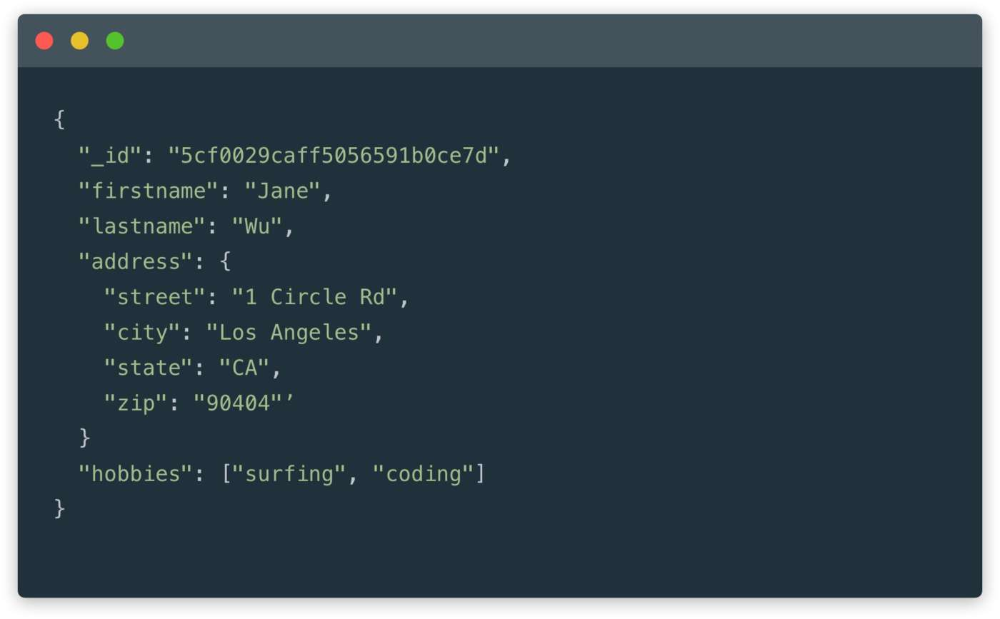
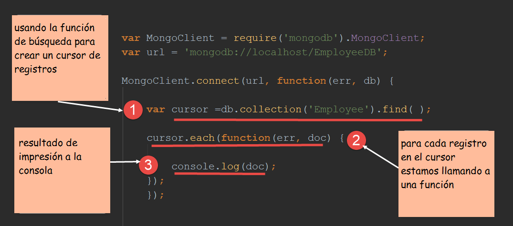

¿Qué es MongoDB? - Concepto
MongoDB (del inglés humongous, "enorme") es un sistema de base de datos NoSQL, orientado a documentos y de código abierto.

En lugar de guardar los datos en tablas, tal y como se hace en las bases de datos relacionales, MongoDB guarda estructuras de datos BSON (una especificación similar a JSON) con un esquema dinámico, haciendo que la integración de los datos en ciertas aplicaciones sea más fácil y rápida.
MongoDB es una base de datos adecuada para su uso en producción y con múltiples funcionalidades. Esta base de datos se utiliza mucho en la industria, contando con implantaciones en empresas como MTV Network, Craiglist, Foursquare. El código fuente está disponible para los sistemas operativos Windows, GNU/Linux, OS X y Solaris.
Ver más
Características
1. Gran sintaxis de consultas: Una de las características de MongoDB más particulares es que podemos realizar todo tipo de consultas, gracias a su potente sintaxis. Esto quiere decir que todas las preguntas, desde las dudas más simples hasta las más complejas, pueden ser resueltas por los usuarios de esta base de datos NoSQL. De esta manera, podrás obtener todo tipo de información pertinente sobre un tema en particular.
2.Indexación: Una de las características de MongoDB más particulares, ya que veremos las similitudes entre este proyecto y las bases de datos relacionales. Por medio de esta herramienta no sólo podemos crear índices, sino también administrarlos y rehacerlos. De igual forma, estos índices tendrán un gran impacto en lo que será el rendimiento de las consultas, mientras la base de datos incremente su tamaño.
Cuenta con soporte para SQL: Aunque al comienzo del post establecimos la separación entre SQL y NoSQL debes saber que, entre las características de MongoDB, está el soporte de este tipo de lenguaje. Tanto si tienes experiencia con SQL como si no, relájate. MongoDB brinda soporte para que los usuarios puedan seguir utilizando el lenguaje de consulta estructurada.
Ver más
Proceso de instalación
- Paso 1:Obtener el instalador para Windows del centro de descargas. 
- Paso 2: Iniciar el instalador como administrador.
- Paso 3: Crear las carpeta de almacenamiento y configuracion de MongoDB.
Ver más
Video de proceso de instalación